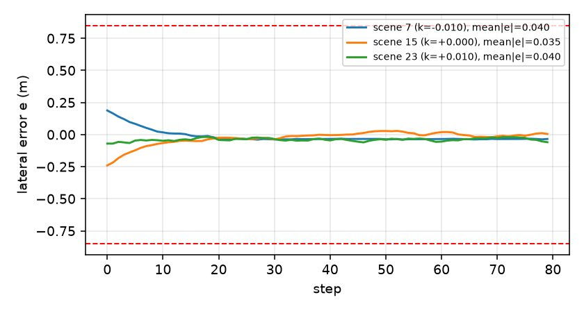
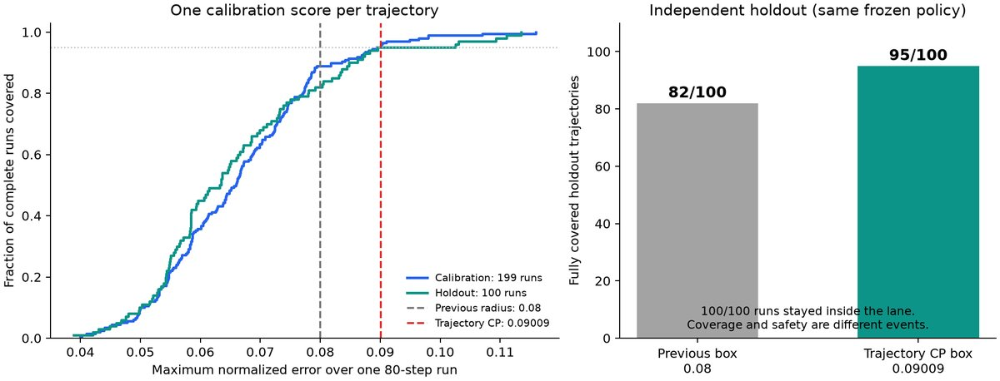

车道保持：2D 视觉与轨迹 CP
patch-DINO (ê,θ̂) → PPO → 学习式 SBC；轨迹 CP 0.090093，150+100 轨迹。
证书通过2D latent (e,θ)名义渲染分布数值区间
0.09009 归一化轨迹 CP
199 校准 / 100 留出；95/100 全程覆盖
0/0 SBC 审计
初始 0.0858 / 危险 23.6535；三个曲率
12/12 图像闭环
patch-DINO；CP 覆盖 98.1–100%；OOD 9/9
0.0211 m e-MAE
θ MAE 0.0059 rad；2D 观测
1. 任务与配置
物理状态
(e,θ)：横向偏差、航向偏差，2D动作
前轮转角
φ∈[-0.45,0.45]，1D动力学
e'=e+vΔt sinθ，θ'=θ+(vΔt/L)tanφ-vΔtκ；v=4，L=2.6，Δt=0.1初态 / 安全
|e|≤0.25, |θ|≤0.06 / |e|≤0.85, |θ|≤0.30；H=80数据
60 个名义场景 ×60 状态 = 3,600 张 192×192 渲染图；曲率 κ∈(-0.01, 0, 0.01)
前端
冻结 DINOv2-S/14 16×16 patch → soft-argmax →
(ê,θ̂)控制器
原图像 PPO；输入
(ê,θ̂,κ)；本包未重训策略SBC
AEBS 同类非负
[2,16,8,1]，Tanh/ReLU；学习式CP
80 步 ×2 坐标的轨迹最大误差；0.0900931580
验证
仿射界 + 普通 IBP；三个曲率；0 实际见证/0 未解决
2. 一步一步：输入 / 处理 / 输出
| 步 | 输入 | 处理 | 输出 / 结果 |
|---|---|---|---|
| 1. 场景/图像 | 60 场景 ×60 状态 | 渲染 192×192；按场景划分 | train 2,160 / val 540 / cal 540 / test 360 |
| 2. 观测 | patch-DINO | 16×16 tokens → 空间 soft-argmax → 2D | e MAE 0.0211 m，θ 0.0059 rad |
| 3. 策略 | 观测 (ê,θ̂,κ) | 原 PPO 80k 步；观测误差扰动训练 | 固定 actor；未重训 |
| 4. 单帧 CP | 校验残差 | max-norm split CP | 0.072 参考；证书用 0.08 |
| 5. 轨迹 CP | 199 条轨迹 | 每条 80×2 最大误差；冻结 q 后再采 100 | 0.090093；留出 95/100 |
| 6. SBC | 真实状态、误差盒 | AEBS 同类学习式 SBC；两轮训练 | 初始 0.0858 / 危险 23.6535 |
| 7. 连续域 | SBC、CP 盒、三个曲率 | 自适应 40×40 起，深度 18；IBP 复核 | 0 见证/0 未解决 |
| 8. 图像闭环 | patch-DINO、PPO、渲染器 | 6 个测试场景 ×2 回合 | 12/12 成功；CP 覆盖 98.1–100% |
3. 结果与状态相关对照
| 项目 | 常量盒（主结果） | 状态相关 v2（修复版） |
|---|---|---|
| 拟合 / 校准 | — | 99 / 100 条，索引不重叠 |
| 阈值 / 秩 | 0.090093，190/199 | q=1.7205338，第 96/100 秩；无 cap |
| 校准覆盖 | 190/199 | 96/100 |
| 旧留出回归覆盖 | 95/100 | 93/100（旧数据回归，不是新盲测） |
| 平均半径 | 0.090093 | 0.0883927 |
| 观测最大半径 | 0.090093 | 0.1093692；全状态域解析上界 0.2358151 |
| SBC | 0/0，原审计 | 13,000 区间，0 见证/0 未解决，三曲率 |
| 同一 100 条校准常量对照 | — | 半径 0.0886653；旧留出 94/100 |
修复版 v2 的关键：用前 99 条拟合、后 100 条校准，有限样本秩 96；留出分数只读留出数据自身残差；没有 `min(...,0.0992)` 截断。实际状态相关集合直接验证通过，不是用全域最大半径 0.235815 的扩大盒；本地/服务器各 31 项测试通过；这里的 `C` 仍固定。联合学习 C 是另一个独立实验，见方法对比。
不能说过头：93/100 是旧数据回归，不是新增盲测；状态相关包络也没有明显优于常量盒（同一校准常量 0.0886653、留出 94/100）；`C` 仍固定，不是联合学习新前端。
不能说过头：93/100 是旧数据回归，不是新增盲测；状态相关包络也没有明显优于常量盒（同一校准常量 0.0886653、留出 94/100）；`C` 仍固定，不是联合学习新前端。
旧 v1 仍撤回：代码/报告不一致、留出分数误用校准残差、同批拟合+校准且 cap 收缩集合；旧 0.0992 盒上的 SBC 通过不能证明 CP 覆盖。见 v1 审计。
4. 输入图像与结果


